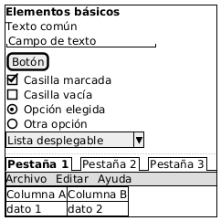
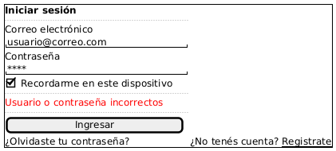
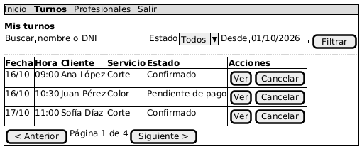
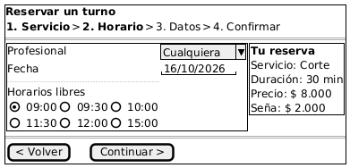

Wireframes con PlantUML Salt
Cómo bocetar las pantallas de su sistema en texto, dentro del repo, y cómo justificarlas en docs/diseño-ui.md. Incluye tres ejemplos para copiar y adaptar.
Para qué sirve
Un wireframe es el esqueleto de una pantalla: qué hay, dónde y en qué orden, sin colores ni diseño final. Sirve para decidir el flujo y los campos antes de programar, y para comprobar que la pantalla cumple lo que piden los requisitos y las historias de usuario.
En esta guía los dibujamos con Salt, la parte de PlantUML para bocetos de pantallas. Se escribe en texto, igual que el diagrama de casos de uso y el modelo ER que ya tienen en diagramas/. Eso tiene tres ventajas en un proyecto con git:
- Queda en el historial. Cada cambio de la pantalla es un commit que se puede comparar con el anterior.
- Se revisa como el resto del repo. Un compañero o el docente puede comentar una línea concreta, por ejemplo un botón que falta.
- No hace falta saber dibujar. Se escribe la estructura y PlantUML la dibuja siempre igual.
Salt no reemplaza a Figma o a una herramienta de diseño: sirve para el boceto. Si el grupo ya trabaja en otra herramienta, puede seguir con ella; lo que pide la rúbrica es la pantalla y la justificación, no la herramienta.
Cómo verlos
Cada pantalla va en su propio archivo, por ejemplo diagramas/wireframes/01-login.puml. Hay tres formas de verla dibujada:
| Forma | Para qué | Cómo |
|---|---|---|
| Editor web de PlantUML | Probar mientras escriben | Abrir plantuml.com/plantuml, pegar el código y mirar el dibujo a la derecha. No instala nada. |
| VS Code | Trabajar en el repo | Extensión PlantUML (jebbs). Con el archivo abierto, Alt+D muestra la vista previa. En la configuración, plantuml.render en PlantUMLServer evita instalar Java. |
| GitHub | Que se vea en docs/diseño-ui.md |
Una imagen que apunta al proxy de PlantUML con la ruta raw del archivo (abajo). Solo funciona si el repo es público. |
Para que la pantalla aparezca dentro de docs/diseño-ui.md, pongan esta línea, con su usuario, su repo y el nombre del archivo:

Si el repo es privado, el proxy no puede leer el archivo. En ese caso exporten el dibujo como PNG o SVG desde el editor web o desde VS Code, súbanlo a diagramas/wireframes/ y enlácenlo con una ruta relativa: .
Lo básico de Salt
Una pantalla se escribe entre @startsalt y @endsalt. Todo va dentro de llaves { }, que arman una grilla: cada línea es una fila y | separa columnas. Una llave puede tener otra adentro, así se arma un bloque dentro de otro.
| Elemento | Se escribe | Ejemplo |
|---|---|---|
| Grilla sin bordes | { … } |
agrupar campos en filas y columnas |
| Grilla con borde exterior | {+ … } |
el marco de la pantalla |
| Tabla con todas las líneas | {# … } |
un listado con columnas |
| Texto | se escribe tal cual | Correo electrónico |
| Negrita, color, subrayado | <b>, <color:red>, <u> |
<b>Mis turnos |
| Campo de texto | entre comillas | "usuario@correo.com " |
| Botón | entre corchetes | [Ingresar] |
| Casilla | [X] marcada, [ ] vacía |
[X] Recordarme |
| Opción única | (X) elegida, ( ) no |
(X) 09:00 |
| Lista desplegable | entre ^ |
^Todos^ |
| Separador | .. punteado, == doble, -- simple |
entre secciones |
| Pestañas | {/ … | … } |
{/ <b>Datos | Pagos } |
| Menú | {* … | … } |
{* Inicio | Turnos | Salir } |
El largo del campo de texto sale de los espacios entre las comillas: más espacios, campo más ancho. Este código usa casi todos los elementos (descargar basico.puml):
@startsalt
{+
<b>Elementos básicos
Texto común
"Campo de texto "
[Botón]
[X] Casilla marcada
[ ] Casilla vacía
(X) Opción elegida
( ) Otra opción
^Lista desplegable^
..
{/ <b>Pestaña 1 | Pestaña 2 | Pestaña 3 }
{* Archivo | Editar | Ayuda }
{#
Columna A | Columna B
dato 1 | dato 2
}
}
@endsalt

Ejemplo 1: inicio de sesión
Es la pantalla más simple y sirve para practicar la grilla. Antes de escribir, miren qué dicen sus requisitos: qué datos se piden, qué pasa si son incorrectos y qué opciones hay (recordar la sesión, recuperar la contraseña, registrarse).
- Abran el marco de la pantalla con
{+y pongan el título en negrita. - Escriban cada etiqueta en una línea y el campo en la siguiente, así el formulario queda en una sola columna.
- Sumen la casilla, y un separador
..antes y después del mensaje de error. - El mensaje de error va en rojo, con el texto que mostraría el sistema. Si su HU dice que no revela cuál dato está mal, el texto tiene que ser genérico.
- Al final, el botón principal y los enlaces secundarios en una fila.
@startsalt
{+
<b>Iniciar sesión
..
Correo electrónico
"usuario@correo.com "
Contraseña
"**** "
[X] Recordarme en este dispositivo
..
<color:red>Usuario o contraseña incorrectos</color>
..
[ Ingresar ]
¿Olvidaste tu contraseña? | ¿No tenés cuenta? <u>Registrate</u>
}
@endsalt

Los espacios dentro de [ Ingresar ] hacen el botón más ancho, para que se vea como la acción principal.
Ejemplo 2: listado con filtros
La mayoría de los sistemas tiene una pantalla que muestra registros y deja buscarlos: turnos, pedidos, incidencias, socios. Se arma con tres partes: un menú arriba, una fila de filtros y una tabla.
- Menú:
{* … }con las secciones del sistema. La sección en la que está el usuario va en negrita. - Filtros: una grilla de una sola fila, con cada etiqueta seguida de su campo o su lista. Los filtros tienen que ser los que piden sus requisitos, no otros.
- Tabla:
{# … }, la primera fila con los títulos en negrita. Pongan dos o tres filas de ejemplo con datos de su caso, incluido un estado poco común (como "Pendiente de pago"), para mostrar que lo pensaron. - Acciones por fila: si una celda lleva dos botones, van en su propia grilla:
{ [Ver] | [Cancelar] }. - Paginado: una fila al pie, si el listado puede ser largo.
@startsalt
{+
{* Inicio | <b>Turnos | Profesionales | Salir }
..
<b>Mis turnos
{
Buscar | "nombre o DNI " | Estado | ^Todos^ | Desde | "01/10/2026" | [Filtrar]
}
..
{#
<b>Fecha | <b>Hora | <b>Cliente | <b>Servicio | <b>Estado | <b>Acciones
16/10 | 09:00 | Ana López | Corte | Confirmado | { [Ver] | [Cancelar] }
16/10 | 10:30 | Juan Pérez | Color | Pendiente de pago | { [Ver] | [Cancelar] }
17/10 | 11:00 | Sofía Díaz | Corte | Confirmado | { [Ver] | [Cancelar] }
}
{ [< Anterior] | Página 1 de 4 | [Siguiente >] }
}
@endsalt

Ejemplo 3: formulario por pasos
Cuando una tarea tiene muchas decisiones (reservar, comprar, armar algo), conviene partirla en pasos y mostrar un resumen a la vista. Es el patrón asistente (o step-by-step). En un boceto alcanza con mostrar un paso bien resuelto e indicar los demás.
- Indicador de pasos: una fila con los nombres de los pasos separados por
>, el actual en negrita. Así el usuario sabe cuánto le falta. - Cuerpo en dos columnas: a la izquierda los campos del paso actual; a la derecha un recuadro
{+ … }con el resumen de lo elegido hasta ahora. - Opciones visibles: si hay pocas opciones (los horarios libres), van como
(X)/( )y no escondidas en una lista desplegable. - Navegación: al pie, "Volver" y "Continuar". Los puntos
.son celdas vacías que empujan el segundo botón a la derecha.
@startsalt
{+
<b>Reservar un turno
{ <b>1. Servicio</b> | > | <b>2. Horario</b> | > | 3. Datos | > | 4. Confirmar }
==
{
{+
Profesional | ^Cualquiera^
Fecha | "16/10/2026"
..
Horarios libres
{ (X) 09:00 | ( ) 09:30 | ( ) 10:00 }
{ ( ) 11:30 | ( ) 12:00 | ( ) 15:00 }
} | {+
<b>Tu reserva
Servicio: Corte
Duración: 30 min
Precio: $ 8.000
Seña: $ 2.000
}
}
==
{ [< Volver] | . | . | . | [Continuar >] }
}
@endsalt

El resumen a la derecha no es decoración: muestra el precio y la seña antes de confirmar, que es justo lo que el usuario necesita saber para decidir.
Del wireframe a diseño-ui.md
El dibujo solo no alcanza: la rúbrica evalúa que cada pantalla esté justificada. Por cada wireframe, docs/diseño-ui.md lleva una entrada con cinco cosas:
| Qué | Qué tiene que decir | Lo que no alcanza |
|---|---|---|
| Wireframe | La imagen o el link al archivo .puml |
Una ruta escrita como texto que no se puede abrir |
| Patrón | El nombre: formulario en una columna, tabla con filtros, asistente por pasos, tarjetas, modal | "Diseño moderno y limpio" |
| Por qué | Por qué ese patrón le sirve a este usuario, con un dato del caso | Una frase que sirve para cualquier sistema |
| Formulario | Cantidad de campos, si va en una pantalla o por pasos, qué se valida y qué mensaje se muestra | "Valida los datos" |
| Accesibilidad | Algo concreto: contraste, uso con teclado, tamaño de botones, texto además del color | "Es accesible" |
Una entrada completa, para el asistente del Ejemplo 3:
## Pantalla 3 — Reservar un turno

**Patrón:** asistente por pasos con resumen lateral.
**Por qué:** la reserva tiene cuatro decisiones (servicio, profesional, horario, datos).
En una sola pantalla el formulario sería largo y el cliente, que reserva desde el
celular, perdería de vista qué eligió. El resumen muestra la seña antes de pagar
(RF-28), que es lo que más dudas genera.
**Formulario:** 4 pasos de 1 a 3 campos. Los horarios ocupados no se muestran
(RF-12). Si otra persona toma el horario antes de confirmar, se vuelve al paso 2
con el mensaje "Ese horario ya no está libre".
**Accesibilidad:** los horarios son botones de al menos 44 px (RNF-08), el paso
actual se indica con texto y no solo con color, y todo se puede completar con teclado.
Cada requisito citado (RF-28, RNF-08) tiene que existir en su docs/requisitos.md con ese número. Si la pantalla muestra algo que ningún requisito pide, o al revés, esa incoherencia resta.
Errores comunes
| Lo que pasa | Por qué | Arreglo |
|---|---|---|
| Dos botones en una celda se dibujan pegados o rotos | Una celda espera un solo elemento | Agruparlos: { [Ver] | [Cancelar] } |
Los acentos salen como ó |
El archivo no está guardado en UTF-8 | En VS Code, abajo a la derecha: "Save with Encoding" → UTF-8 |
| El dibujo no aparece y sale un error | Falta @startsalt o una llave { quedó sin cerrar |
Contar las llaves: cada { tiene su } |
| En GitHub la imagen sale rota | El repo es privado, o la ruta raw está mal | Probar la ruta raw en el navegador, o subir el PNG |
El link en diseño-ui.md no abre |
La ruta está escrita entre comillas invertidas y no como link | [Nombre](../diagramas/wireframes/archivo.png) |
| El nombre del archivo no coincide | 02-tablero.png en el documento, 02-tableros.png en la carpeta |
Copiar el nombre desde la carpeta |
Lista antes de subir
Revisen cada pantalla con esta lista:
- ☐ La pantalla corresponde a una historia de usuario o a un caso de uso, y se nota cuál.
- ☐ Los campos y filtros son los que piden los requisitos, ni más ni menos.
- ☐ Hay al menos un caso que sale mal (error, sin resultados, sin lugar) dibujado o descripto.
- ☐ El link en
docs/diseño-ui.mdabre la imagen. - ☐ La entrada tiene patrón, por qué, formulario y accesibilidad.
- ☐ Lo que generó una IA, lo leyeron y lo adaptaron: no quedan marcas, textos de plantilla ni pantallas de otro sistema.
Terciario Urquiza · Prof. Pablo Pedernera · octubre de 2026